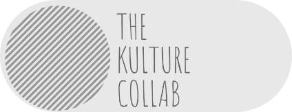

<!DOCTYPE html>
<html>
        <meta name="viewport" content="width=device-width, initial-scale=1.0">
    <head>
        <style>

            /* body
{
  margin: 0;
  padding: 0;
  
  
  background: #232323;
  color: #cdcdcd;
  font-family: "Avenir Next", "Avenir", sans-serif;
} */

a
{
  text-decoration: none;
  color: #232323;
  
  transition: color 0.3s ease;
}

a:hover
{
  color: tomato;
}
input[type=checkbox]
{
  /* Double-sized Checkboxes */
  -ms-transform: scale(6.5); /* IE */
  -moz-transform: scale(6.5); /* FF */
  -webkit-transform: scale(6.5); /* Safari and Chrome */
  -o-transform: scale(6.5); /* Opera */
  transform: scale(6.5);
  margin-right: 30px;
  /* float: right; */
  padding: 10px;
}
#menuToggle
{
  display: block;
  position: relative;
  top: 10px;
  right: 0px;
  float: right;
  
  z-index: 1;
  
  -webkit-user-select: none;
  user-select: none;
}

#menuToggle input
{
  display: block;
  width: 40px;
  height: 32px;
  position: absolute;
  top: -7px;
  right: -5px;
  float: right;
  cursor: pointer;
  
  opacity: 0; /* hide this */
  z-index: 2; /* and place it over the hamburger */
  
  -webkit-touch-callout: none;
}

/*
 * Just a quick hamburger
 */
#menuToggle span
{
  display: block;
  width: 33px;
  height: 4px;
  margin-bottom: 5px;
  position: relative;
  
  background: #cdcdcd;
  border-radius: 3px;
  
  z-index: 1;
  
  transform-origin: 4px 0px;
  
  transition: transform 0.5s cubic-bezier(0.77,0.2,0.05,1.0),
              background 0.5s cubic-bezier(0.77,0.2,0.05,1.0),
              opacity 0.55s ease;
}

#menuToggle span:first-child
{
  transform-origin: 0% 0%;
}

#menuToggle span:nth-last-child(2)
{
  transform-origin: 0% 100%;
}

/* 
 * Transform all the slices of hamburger
 * into a crossmark.
 */
#menuToggle input:checked ~ span
{
  opacity: 1;
  transform: rotate(45deg) translate(-2px, -1px);
  background: #232323;
}

/*
 * But let's hide the middle one.
 */
#menuToggle input:checked ~ span:nth-last-child(3)
{
  opacity: 0;
  transform: rotate(0deg) scale(0.2, 0.2);
}
#menuToggle img{
    float: right;
    margin-right: 28px;
}

/*
 * Ohyeah and the last one should go the other direction
 */
#menuToggle input:checked ~ span:nth-last-child(2)
{
  transform: rotate(-45deg) translate(0, -1px);
}

/*
 * Make this absolute positioned
 * at the top left of the screen
 */
#menu
{
  position: absolute;
  width: 300px;
  margin: 130px 0 0 230px;
  padding: 50px;
  padding-top: 125px;
  
  background: #ededed;
  list-style-type: none;
  -webkit-font-smoothing: antialiased;
  /* to stop flickering of text in safari */
  
  transform-origin: 0% 0%;
  transform: translate(-100%, 0);
  
  transition: transform 0.5s cubic-bezier(0.77,0.2,0.05,1.0);
}

#menu li
{
  padding: 10px 0;
  font-size: 22px;
}

/*
 * And let's slide it in from the left
 */
#menuToggle input:checked ~ ul
{
  transform: none;
}
        /* .topnav {
            background-color: darkgray;
            overflow: hidden;
            margin: 0 0 0 150px;
            height: 60px;
            margin-top: 10px;
            }
            
        .topnav a {
                float:left;
                margin-top: 5px;
                display: block;
                color: #f2f2f2;
                text-align: center;
                padding: 15px 20px;
                text-decoration: none;
                font-size: 17px;
                }

         Change the color of links on hover 
            .topnav a:hover {
                background-color: #ddd;
                height: 100%px;
                
                color: black;
            }

        /* Add an active class to highlight the current page 
            .topnav a.active {
                background-color: gray;
                height: 100%;
                color: white;
            }

        /* Hide the link that should open and close the topnav on small screens 
            .topnav .icon {
                display: none;
            }
            @media screen and (max-width: 600px) {
            .topnav a:not(:first-child) {display: none;}
                .topnav a.icon {
                    float: right;
                    display: block;
                }
            }

        /* The "responsive" class is added to the topnav with JavaScript when the user clicks on the icon. This class makes the topnav look good on small screens (display the links vertically instead of horizontally) 
            @media screen and (max-width: 600px) {
            .topnav.responsive {position: relative;}
                .topnav.responsive a.icon {
                position: absolute;
                right: 0;
                top: 0;
                }
            .topnav.responsive a {
                float: none;
                display: block;
                text-align: left;
            }
        }
        .logo img{
            position: absolute;
            margin-left: 7px;
            
            width: 10%;
            height: 10%;

        }
        .motto img{
            position: relative;
            float: right;
            height:6%;
            width: 8%;
            border-radius: 5px;
        }
*/
        
         </style> 
        

        <!--<script>
             function navIcon() {
                var y = document.getElementById("myTopnav");
                if (y.className === "topnav") {
                    y.className += " responsive";
                } 
                else {
                    y.className = "topnav";
                }
            }
        </script>-->

        <!-- <link rel="stylesheet" type="text/css" href="../css/awesome.min.css">
        <header id="header">
            <div class = "logo">
                <a href = "index.html">
                    
                </a>
            </div>
            <div class = "motto">
                
                    
                
            </div>
          <div class="topnav">
              <nav id="myTopnav">
                    <a href="#home" class="active">Home</a>
                    <a href="#news">News</a>
                    <a href="#contact">Contact</a>
                    <a href="#about">About</a>
                    <a href="javascript:void(0);" class="icon" onclick="navIcon()">
                      <i class="fa fa-bars"></i>
                    </a>
             </nav>
        </div>  -->
        <nav role="navigation">
                <div id="menuToggle">
                  <!--
                  A fake / hidden checkbox is used as click reciever,
                  so you can use the :checked selector on it.
                  -->
                  <input type="checkbox" />
                  
                  <!--
                  Some spans to act as a hamburger.
                  
                  They are acting like a real hamburger,
                  not that McDonalds stuff.
                  -->
                  <!-- <span></span>
                  <span></span>
                  <span></span> -->
                  <!-- <div class = "buttonImg"> -->
                      

                  <!-- </div> -->
                  <!--
                  Too bad the menu has to be inside of the button
                  but hey, it's pure CSS magic.
                  -->
                  <ul id="menu">
                    <a href="#"><li>Home</li></a>
                    <a href="#"><li>About</li></a>
                    <a href="#"><li>Info</li></a>
                    <a href="#"><li>Contact</li></a>
                    <a href="https://erikterwan.com/" target="_blank"><li>Show me more</li></a>
                  </ul>
                </div>
              </nav>
        </header>
    </head>
</html>